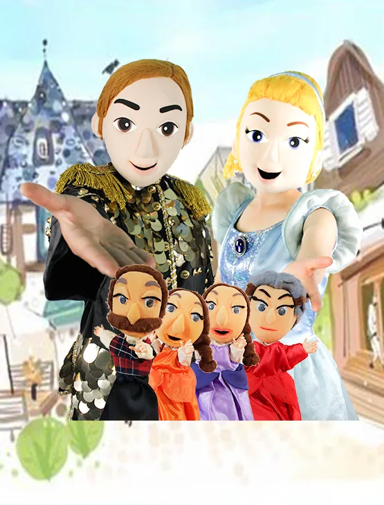

01
신데렐라
등장인물 · 신데렐라, 샤롤왕자, 제럴드, 요정할머니, 계모, 첫째언니, 둘째언니
세계적인 명화 신데렐라를 눈앞에서 펼쳐지는 탈 인형과 손인형으로 극단씨앗만의 고유콘텐츠 퓨전극으로 여러분들에게 보여드립니다. 부모님을 여의고 못된 계모와 두 언니로부터 구박과 궃은일을 당하는 가여운 신데렐라. 항상 꿈을 잃지 않고 밝게 살아가려 노력하는 신데렐라에게 요정할머니가 나타나 신데렐라의 꿈을 이루어 줍니다. 과연 신데렐라는 요정할머니의 도움으로 궁전에 무사히 갈 수 있을까요?